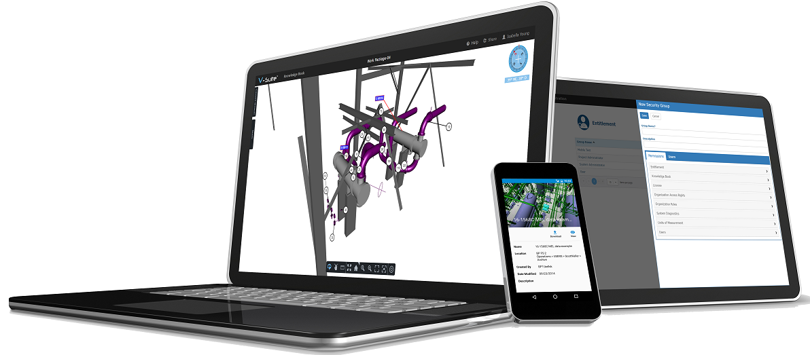

入门
欢迎使用V-Suite帮助
V-Suite可通过您的浏览器和移动设备使用。要了解有关适用于移动设备的V-Suite 的更多信息，请参阅移动设备。

这是浏览器上V-Suite的帮助系统。如果您需要V-Suite移动应用程序的帮助，请通过这些应用程序访问可用的帮助系统。
导航V-Suite帮助
V-Suite帮助是上下文相关的。应用程序将通过应用程序标头提供上下文特定的帮助。如果没有活动上下文，您将登陆此处。
目录 - 使用左窗格中的目录浏览可用主题。
搜索 - 输入整个单词或部分单词，例如， Knowledge Book或 Know。结果显示在帮助系统的内容窗格中。
使用以下约定：
它看起来像什么 | 你该怎么办？ | 会发生什么 |
加粗字体 | 记下并寻找行动 | 指示 |
斜体文本 | 用户界面中的字段、对话框、对象的名称 | 对您在用户界面中看到的内容的引用 |
蓝色背景 | 阅读以获取更多信息 | 提示、有用或广泛的信息 |
蓝色且带下划线的文本 | 点击它 | 跳转到另一个主题以获取更多详细信息 |
入门
以下是一些可帮助您发现V-Suite功能的主题：